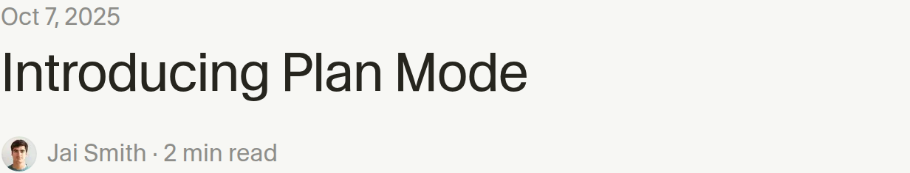
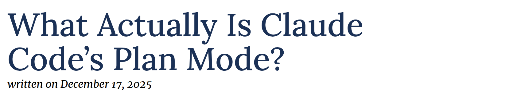

CSCI-B 490 / B 629 · October 22, 2026
Planning with coding agents
From a vague request to a plan we can test
The request
Add undo and redo to our text buffer. Keep it simple.
What would you need to decide before implementing this?
The choices hiding in that request
- Does undo restore the cursor?
- Does moving the cursor create an undo step?
- What happens after undo, then a new edit?
- How much history should we retain?
Plan Mode

“Review or edit the detailed plan, then build directly from your plan when ready.”
The workflow makes room for inspection and decisions before edits.
Planning, plans, and permissions
| Planning | Inspect, ask questions, compare choices, revise. |
|---|---|
| A plan | A record of decisions, steps, and checks. |
| Plan Mode | A tool workflow for doing that before implementation. |
| Permissions | Controls over which actions the agent may perform. |
A plan is a proposal. Tests and review still have to check the result.
Live demo: the first prompt
In Codex CLI, enter /plan, then:
Read text-buffer.js and the test setup. Plan undo/redo. Ask me about behavior that the code cannot answer. Keep the current API and one implementation file with no comments. Do not implement yet.
What inspection tells us
get cursor() { return this.#cursor; }
insert(text) {
this.#text = this.#text.slice(0, this.#cursor)
+ text + this.#text.slice(this.#cursor);
this.#cursor += text.length;
return this;
}
Private string and cursor. Fluent methods. UTF-16 offsets.
The existing npm test exercises red-black trees, not this buffer.
Discovery versus a decision
| The agent can inspect | We need to decide |
|---|---|
| Where insertion changes state | Which edits form one undo step |
| How to run existing tests | What an empty undo should do |
| What cursor offsets mean today | Whether changing that is in scope |
Questions should resolve choices that affect the work.
A behavior example
| Operation | Text | Cursor |
|---|---|---|
new TextBuffer("cat").moveTo(3) | cat | 3 |
insert("s") | cats | 4 |
moveTo(0) | cats | 0 |
undo() | cat | 3 |
redo() | cats | 4 |
Proposed behavior: restore the cursor associated with the edit.
Our first specification
- Each nonempty insertion creates one history entry.
- Cursor movement and empty insertion create none.
- A new nonempty insertion clears redo history.
- Empty undo/redo do nothing. Both return
this.
Keep UTF-16 offsets. No persistence, edit grouping, or UI yet.
The representation choice
| Approach | Why consider it? | What needs care? |
|---|---|---|
| Text + cursor snapshots | Simple to implement and inspect | Retaining many text versions |
| Edit records | Store changed text and positions | Inverse edits and cursor rules |
| Persistent tree | Share structure between versions | A larger data-structure change |
For the first demo, choose snapshots and record the limitation.
A plan we can review
- Specify the history behavior with concrete traces.
- Add buffer tests that expose the missing feature.
- Add snapshot history inside
TextBuffer. - Run buffer tests. Check regressions and review the diff.
node --test demos/text-buffer.test.cjs
Proposed test file. Each step names a result we can inspect.
A plan that hides the hard parts
1. Analyze the problem 2. Implement undo and redo 3. Add comprehensive tests 4. Optimize performance
What decisions are still missing?
A practitioner’s workflow
“Start with a clear plan (specs before code)”
Osmani describes clarifying requirements, working in small steps, and checking the result as he goes.
For our buffer: behavior examples first, then a small implementation.
Addy Osmani · My LLM coding workflow going into 2026 · January 4, 2026
The implementation handoff
Implement the agreed snapshot plan. Keep the existing API and string offsets. Add tests for our traces and history branching. Run the tests and report any differences from the plan.
Review the plan before switching into implementation.
Evidence for the feature
- Insertion, undo, and redo restore the specified states.
- Undo, then a new insertion makes redo unavailable.
- Cursor moves and empty insertions preserve redo.
- The cursor stays between zero and the text length.
Check the observed text and cursor, not private stack fields.
A new requirement
Now keep 1,000 one-character edits on a 5 MiB ASCII document. What would you change in the plan?
Which earlier decisions still hold?
What evidence would justify changing the representation?
Replanning with evidence
- Keep the behavior contract and its tests.
- Measure snapshot history on the specified workload.
- Compare edit records using the same trace.
- Choose a representation and rerun the checks.
1,000 full 5 MiB copies would be about 4.9 GiB.
That is a copy-model estimate, not a measured JavaScript heap size.
Plans can change during execution
“As the agent discovers constraints, it updates the plan.”
A revision should say what changed, why, and which checks remain valid.
Denzil Bernard and Diggory Rycroft · Cursor · January 30, 2026
Parallel work needs a shared contract
| Task | Useful independent result |
|---|---|
| Inspect the implementation | State changes and compatibility constraints |
| Review behavior examples | Ambiguities and missing cases |
| Compare history designs | Tradeoffs and a measurement proposal |
Agree on the behavior before parallel implementation. Give each file one owner.
Does planning need a mode?

“why can I not just ask the model to plan with me?”
Ronacher prefers a conversation and an editable handoff document.
When planning earns its cost
| More planning helps when… | A short request may suffice when… |
|---|---|
| Several behaviors seem reasonable | The intended diff is already clear |
| Choices affect many later steps | The change is local and reversible |
| Failure is expensive to detect or undo | One direct check establishes success |
Your turn
Plan a change to your project, or add grouped undo to the buffer.
- Write one ambiguous request.
- Have the agent inspect and ask questions.
- Agree on behavior examples and a short plan.
- Trade plans with a partner. Find one hidden assumption.
Before implementation
- Can we explain the behavior using an example?
- Does the plan match the repository we inspected?
- Does each step produce something checkable?
- Do we know which discovery would change the plan?